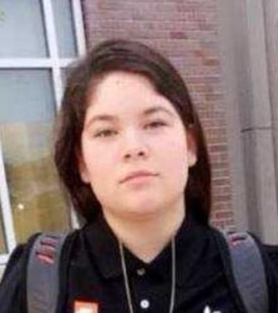

Gabriella Rodriguez case: knocked down on Harrison Avenue on her way to the school bus, she was run over by a second car as she tried to get up. That driver never stopped.
Just before sunrise on Monday, Sept. 10, 2018, Gabriella "Gabby" Rodriguez, 15, ran across Harrison Avenue in the 2100 block, near Hansford Place, to catch the Metro bus to Western Hills University High School. There was no crosswalk. A westbound vehicle knocked her down, and its driver stopped. As she tried to get up, a second car ran her over and drove off. She died that morning.
Case file at a glance
Police first described the car that fled as an older white Toyota Corolla with Ohio plates, possibly driven by a Hispanic woman, then said it was a white 2012 to 2015 Honda Civic. They found one Civic, inspected it and cleared it. Investigators interviewed more than 30 people and looked at more than 300 vehicles, with no result. More than eight years later the driver has never been named. "To me, it's still a murder," her mother said in 2020.
- Two vehicles.The first knocked her down and its driver stayed. The second, police say, caused most of her injuries and kept going (WCPO, 2019).
- A white sedan.First a white Toyota Corolla with Ohio plates (possibly 2010), then a white 2012 to 2015 Honda Civic. One Civic was inspected and cleared (FOX19, Oct 3, 2018).
- A described driver.Police said the driver was possibly a Hispanic woman (WLWT; 700WLW, Sept 2018). No later report repeats or withdraws it.
- Last seen heading inbound.The car was last seen going southbound (inbound) on Harrison (700WLW, Sept 10, 2018).
Editorial assessment of public sources, not a finding of fact. Nobody named here has been charged unless this page says so.
What happened
Details come from WLWT, WCPO, FOX19, WHIO, 700WLW and WKRC reports from 2018 to 2024. Police released the vehicle and driver descriptions in the first days; most later reports repeat them. Reports differ on the time, the first vehicle, the hospital and her grade; we show each conflict.
Born
Her birthday is Nov. 14; her family marked her 18th in 2020 (WKRC).
A field of their own
As a student she asks the principal for a softball field for the girls' team, which had practiced off campus. The school agrees to rebuild an unused field next to Dater High (WCPO).
Leaving for school
Her father tells her he loves her before leaving for work. Less than an hour later she is on Harrison Avenue (WHIO; WCPO). WLWT says her brother and a few other students were with her.
Struck twice
Running across the four-lane road near Hansford Place / Sarvis Court to catch the Metro bus, not in a crosswalk, she is knocked down by a westbound vehicle whose driver stops. As she tries to get up, a second car runs her over and drives off, southbound (inbound) on Harrison (WLWT; 700WLW; FOX19).
She dies
She is pronounced dead that morning: at Cincinnati Children's Hospital Medical Center according to WCPO, WHIO and FOX19, or UC Medical Center according to WLWT and 700WLW.
A Corolla and a woman
Police ask for help finding an older (possibly 2010) white Toyota Corolla with Ohio plates, possibly driven by a Hispanic woman (CincyPD on Twitter, via WHIO; WLWT; 700WLW).
Vigil on her field
Hundreds gather at Western Hills High on the softball field she pushed for. Her brother tells the driver: "Just deal with your consequences" (FOX19). The Reds hold a moment of silence (WHIO).
Now a Honda
Police say the car was a white 2012 to 2015 Honda Civic, "not a Toyota Corolla," and release a photo of the type of car (WCPO).
Funeral
Visitations and the funeral are held at McPherson Church, 931 McPherson Ave. A memorial softball game raises money for the family (FOX19; WCPO).
A Civic cleared
Police find a Civic they believed was the car. Its owner cooperates, and "a thorough inspection" shows it was not involved (FOX19; WCPO).
30 people, 300 cars
At a City Council committee, the Traffic Unit says it has interviewed more than 30 people of interest and assessed more than 300 vehicles. Assistant Chief Paul Neudigate: "not substantial positive progress" (WCPO).
Nothing new
Police tell FOX19 nothing new has come to light.
"What color car"
"We're coming up to a year, and we don't even know what color car hit her," her mother tells WCPO. Police found Gabby at fault for crossing outside a crosswalk.
One year
Lanterns on the softball field. No arrests (FOX19; WCPO). The family starts a scholarship and a pedestrian-safety foundation (FOX19).
Slow Down for Gabby
A rally at Harrison and Hansford asks for a crosswalk. CPD District 3 has no updates (FOX19).
Two years
Police say they reviewed Metro bus video, a neighbor's security camera and a Snapchat video, and "did not find any forensic evidence." The driver who fled would likely face a leaving-the-scene charge, not vehicular manslaughter (FOX19). Still no crosswalk (WCPO).
First scholarships
Two West High seniors receive $1,000 scholarships in her name (WKRC); a memorial tournament has players in her No. 13 (FOX19).
Still no crosswalk
Her mother still asks for a crosswalk; the city says a Harrison Avenue safety project will add crossings and speed cushions, including one near Hansford Place (WLWT).
Construction
The city's Harrison Avenue safety project (Queen City Ave. to Kling Ave.) is under construction as of Nov 2025 (city DOTE page). We could not confirm what has been built at Hansford Place.
Our check
We found no arrest or charge and no report newer than March 2024. We have not confirmed the status with police.
Victims
A softball player who talked her school into building the girls a field.

Photo: Cincinnati Public Schools, as published by FOX19 (2018). Contact us to have it removed.
DiedGabriella "Gabby" Rodriguez, 15
Born Nov. 14, 2002 (WKRC), the youngest of four children and her parents' only daughter (WCPO). A student at Western Hills University High School (West High) and a standout softball player who wore No. 13 and played for the Reds RBI program (WCPO). Her principal called her an excellent student with a great sense of humor. Teammates remember her bold black eye stripes and how she corrected teammates instead of getting angry (WCPO). "Gabby was the loudest," her mother said. Her parents, Shawna and Eduardo Rodriguez, have campaigned for pedestrian safety on Harrison Avenue ever since.
Each photo is credited under the picture. Family members or others who want a photo added, changed, or removed can use the contact form at the bottom of this page.
Evidence
What exists, and what each piece may or may not mean.
| Item | What is known | Disputed or unknown |
|---|---|---|
| The car that fled (first description) |  | Police changed the description within days. Whether anything (a part, paint, a partial plate) was recovered at the scene has not been published. |
| The car that fled (revised) |  | What made police switch from a Corolla to a Civic is not public. One Civic was inspected and cleared on Oct 3, 2018 (FOX19). In 2019 her mother said the family did not know "what color car" hit her (WCPO), so even the color may be in doubt. |
| The driver | Possibly a Hispanic woman (police, via WLWT and 700WLW, Sept 2018). | No age, hair, clothing or other detail was released. No later report repeats it, and police have not withdrawn it. |
| The first vehicle | Knocked her down; its driver stopped and cooperated (WCPO, 2019). FOX19 names a 2010 Dodge Journey. | WCPO and a WCPO-sourced story say she was bumped by the mirror of a silver minivan. We do not name that driver, who stayed and is not a suspect. |
| Video | A Metro bus was recording; a neighbor had a security camera; a Snapchat video showed her on the ground (FOX19, 2020). | Police said they reviewed them and "did not find any forensic evidence." None has been released. |
| Scale of the search | More than 30 people of interest interviewed and more than 300 vehicles assessed by January 2019 (Traffic Unit, via WCPO). | No person of interest has been named. |
| The likely charge | Leaving the scene of a crash, according to police (FOX19, 2020). | Police said the second driver would likely not face vehicular manslaughter. Ohio treats leaving the scene of a fatal crash as a felony. |
| The road | Four lanes, no crosswalks, poor lighting; her mother says drivers go "60, 70, 80 mph" (WHIO; WCPO). | A citywide safety project for Harrison Avenue was under construction in 2025; we could not confirm a crossing at Hansford Place yet. |
Public documents
News reports and a city project page are the public record we could read. The crash report can be requested; the investigative file is not public while the case is open.
| Document | Holder | What it shows | Access |
|---|---|---|---|
| Ohio traffic crash report (Sept 10, 2018) | Cincinnati Police Department | Vehicles, time, direction, witnesses. | Request needed |
| Police vehicle images (Sept 2018) | Cincinnati Police Department | Photo of the type of car (white Honda Civic) released to the media. | Quoted in news |
| Metro bus and neighbor video | Cincinnati Police Department | Reviewed by police; no forensic evidence found (FOX19, 2020). | Withheld or sealed |
| Harrison Avenue Safety Improvements | City of Cincinnati DOTE | Corridor redesign, crossings, speed cushions. | Online, free |
Access labels: Online, free = we could open it. Fan-hosted copy = a private researcher posted scans; originals are held by the named agency, and we cannot vouch for completeness. Quoted in news = reporters read it; we did not see the document itself. Request needed = held by an agency or court. Withheld = the holder has not released it. We cannot reach non-public records, and we do not try to.
Online discussion (unverified)
Where people talk about this case online, and how to read it.
| Platform | Live search | What you tend to find |
|---|---|---|
| Google: Reddit | site:reddit.com search | Public Reddit threads that Google has indexed, including old discussions. |
| Google: X and Twitter | X and Twitter posts | Public posts and profiles that appear in search results. |
| Google: Facebook | Public Facebook pages and posts | Only public pages and groups that Google can see. Private groups never appear. |
| Google: Instagram and TikTok | Instagram and TikTok | Public posts, memorials, and videos. |
| Google: forums | Forums and message boards | Long-running true-crime forums. |
| Google News | Latest news | Newest reporting, which is usually more reliable than posts. |
| Search Reddit | Long discussion threads and theories, often by amateur researchers. No sign-in needed to read. | |
| X (Twitter) | Search X | Short posts, news links, and anniversary notes. May require sign-in. |
| Search Facebook | Public groups and family or community pages. Requires sign-in. | |
| Search #justiceforgabby | Memorial and true-crime posts. Requires sign-in. | |
| YouTube | Search YouTube | Documentaries, news clips, and interviews. Quality varies widely. |
Be careful with online theories. Naming a private person as a suspect can harm an innocent family, and many "identifications" on forums have been wrong. Our own tools could not read these platforms: Reddit blocks automated access, and the others require an account. The Google searches above work from your browser. To get new public mentions by email, make a free Google Alert for the case name in quotation marks.
Coverage timeline and verification
What local and national reports say, and when we last checked for a solution.
| Date | Outlet | What it reported | Link |
|---|---|---|---|
| Sep 10, 2018 | 700WLW | Struck near Sarvis Ct.; second car, a white Corolla possibly driven by a Hispanic woman, last seen southbound. | Read |
| Sep 11, 2018 | WLWT | Hit twice about 6:45 a.m. while catching her bus; police seek a white Corolla with Ohio plates. | Read |
| Sep 11, 2018 | FOX19 | Vigil at Western Hills; her brother asks the driver to come forward. | Read |
| Sep 2018 | WCPO | Police: the car was a white 2012-2015 Honda Civic, not a Toyota Corolla. | Read |
| Oct 3, 2018 | FOX19 | Police inspect a Civic and clear it; the car that fled is still unidentified. | Read |
| Jan 2019 | WCPO | Traffic Unit: more than 30 people of interest interviewed and 300 vehicles assessed; no substantial progress. | Read |
| Sep 10, 2019 | FOX19 | One year: no arrests. | Read |
| Sep 11, 2020 | FOX19 | Bus, neighbor and Snapchat video reviewed, no forensic evidence; likely charge is leaving the scene; Crime Stoppers reward. | Read |
| Mar 1, 2024 | WLWT | Driver still not caught; city plans crossings and speed cushions near Hansford Place. | Read |
Status is re-checked on a regular schedule. If you know of a development we missed, use the clue form near the top of this page or the contact form, and include a link.
Suspects
No one has been named or charged. Police released a description of the car and, in the first days, of the driver. We show the police descriptions and reference photos of both car models.
The driver who fled
Why named: Ran her over as she tried to get up and drove off southbound on Harrison. Police said possibly a Hispanic woman, in a white Toyota Corolla (first) or a white 2012 to 2015 Honda Civic (later).
Against: Never identified. One Civic and its owner were cleared (FOX19, Oct 3, 2018).
Where a card shows a silhouette, we found no photo. Anyone who wants a photo added, changed, or removed can use the contact form at the bottom of this page.
Latest: no arrest, a road still being fixed
The newest report we found is WLWT, March 1, 2024. It gives no police update; the driver has not been caught.
What is known
- Gabby was hit twice on Harrison Avenue on Sept. 10, 2018; the second driver fled.
- Police described a white sedan (Corolla, then a 2012-2015 Civic) and a possibly Hispanic female driver.
- One Civic was inspected and cleared; more than 300 vehicles were checked.
- Crime Stoppers offers a reward (no amount published).
What would settle it
- Body shop work. A white Civic or Corolla brought in for front-end or undercarriage repair in September 2018, or a car someone suddenly stopped driving.
- A story told. Anyone who has heard a woman, or anyone, talk about hitting a girl on Harrison Avenue that morning.
- Commuters. Drivers and bus riders inbound on Harrison around 6:30-6:45 a.m. that Monday who saw a white car speed away.
- Video. Dash cameras or business cameras on Harrison south of Hansford, kept from that morning.
A commuter on her way into town, who knew she had hit someone and kept driving
We put the chance that the driver knew she had hit a person at roughly 85%: Gabby was already in the road after the first car stopped, and several reports say she was run over, not clipped. We put the chance that the car was a white Honda Civic, the police's later description, at roughly 60%, since police changed it once and her mother later doubted even the color. We put the chance of a charge within five years at roughly 10%. These are our judgments, not findings.
Editorial judgment, not statistics.
Elimination matrix
"—" means no public information, not a clean result.
| Person or idea | At the scene | Physical link | Legal outcome |
|---|---|---|---|
| Driver who fled (unidentified) | ✓ ran her over, per police | ? car never found | — unidentified |
| Owner of the inspected Civic | car not involved | inspection cleared it | — cleared Oct 2018 |
✗ excluded or contradicted · ✓ supports · ? disputed · — nothing public. No cell is an official finding.
Our hypothesis
Editorial reading of public records. A working theory, not a finding, and it names no individual.
A driver who knew, and kept going
- She was already down. The first car had stopped and its driver was there. Gabby was trying to get up when the second car ran her over (police, via WLWT and FOX19). A driver close enough to run over a person on the ground had a moment to see something in the lane.
- She did not stop. Whether she knew it was a person or told herself it was something else, she drove on southbound, toward downtown, at commute time. That fits a regular morning driver on Harrison who may pass the spot often.
- The car was damaged underneath or in front. Running over a person usually leaves marks on the bumper, grille or underside. A white sedan that went in for that kind of repair, or was parked and not driven, in the weeks after Sept. 10, 2018 is the strongest lead.
- The description wavered. Police went from a Corolla to a Civic in days, and a year later her mother said they did not even know the color. The early tips may have been about a similar car, not this one. That is why the case went cold despite 300 vehicles checked.
- Someone has been told. People who hit someone rarely keep it to themselves for eight years. A friend, a relative, or a mechanic may be the person who can close this case.
Judgment, not statistics.
Missing links
Questions raised by gaps in the public record.
1. The basis for the Civic
What evidence (a part, a camera image) made police change the model, and whether it still holds.
2. Parts left behind
Whether any car parts, paint or fluid were recovered on Harrison Avenue.
3. The driver description
Where "possibly a Hispanic woman" came from, and whether police still stand by it.
4. The bus video
What the Metro bus camera shows of the second car.
5. Repair records
Whether body shops in the region were canvassed for white sedans in September 2018.
Evidence gaps
"Not public" means we could not find a report.
| Item | Tested | Gap |
|---|---|---|
| Crash reconstruction | Cincinnati Police Traffic Unit, 2018. | Not public. |
| Autopsy | Hamilton County Coroner, 2018. | Not public. |
| Bus, neighbor and Snapchat video | Reviewed by police. | Not released. |
| Police crash report | Filed in 2018. | Ohio crash reports can be requested; the investigative file is not public while the case is open. |
Forensic tech
| Tool | What it could do | Status here |
|---|---|---|
| License plate readers | Check plates of white sedans on Harrison and nearby routes that morning, if any readers were in place in 2018. | Not reported |
| Paint and parts analysis | Narrow the make, model and year from debris left on the road. | Not reported |
| Video enhancement | Re-examine the bus and neighbor footage with newer tools. | Not reported |
Solved cases
Local cases that moved after decades.
Carol Sue Klaber (Boone County, KY, 1976)
Investigators say a private genealogy investigation helped them identify Thomas Dunaway, who died in 1990, as the man who killed the 16-year-old. He cannot be indicted, so prosecutors sent a letter saying he would have been charged. The lesson: genealogy can name a killer after decades, even when no trial is possible.
Forensic genetic genealogy training
In 2024, local investigators were being trained in the technique, which has already helped solve Cincinnati-area cases, according to FOX19. The lesson: the tool is now local, so cases with usable DNA have a real path forward.
Golden State Killer
Old crime-scene DNA matched relatives in a public database and led to a 2018 arrest. The lesson: a usable sample can still work after decades.
Case details come from public news coverage and the Boone County Sheriff's cold-case list. Confirm in court records.
False leads
| Claim | Source and date | Where it stands |
|---|---|---|
| The inspected Honda Civic | FOX19, Oct 3, 2018 | Police found a Civic they believed was the car; the owner cooperated and an inspection showed it was not involved. Do not treat its owner as a suspect. |
| Toyota Corolla vs. Honda Civic | WCPO, Sept 2018 | The first description (an older white Corolla) was replaced by a white 2012-2015 Civic within days. Tips about Corollas may still be useful, but police now describe a Civic. |
| Silver minivan vs. Dodge Journey | WCPO; FOX19, 2018 | Reports differ on the first vehicle, whose driver stopped. It is not the car that fled. |
| UC Medical Center vs. Children's | WLWT; WCPO, 2018 | Early reports said UC Medical Center; later ones say Cincinnati Children's. Either way she died that morning. |
Where
She was struck in the 2100 block of Harrison Avenue near Hansford Place and Sarvis Court, on the border of North Fairmount and East Westwood, on Cincinnati's west side. The location is approximate.
Open in maps: Harrison Ave. near Hansford Pl. (approximate). We show no photograph of the scene.
Source ratings
| Source | Type | Rating | Use with care because |
|---|---|---|---|
| WLWT (Sept 2018, Sept 2020, Mar 2024) | Local TV | A | Read in full; driver description; 2024 update. |
| WCPO (2018-2020, several) | Local TV | A | Read in full; most pages show no date, worked out from the text. |
| FOX19 (2018-2021, several) | Local TV | A | Read in full; cleared Civic, evidence reviewed, likely charge, photo. |
| WHIO (Sept 11, 2018) | Dayton TV | A | Read; quotes the CincyPD vehicle tweet. |
| 700WLW (Sept 2018) | Radio | A | Read; direction of travel, driver description. |
| WKRC (2020-2021) | Local TV | A | Read; birthday, scholarships. |
| City of Cincinnati DOTE | Agency | A | Read; Harrison Avenue safety project. |
| Ohio Attorney General cold-case listing | Agency | n/a | Our tools could not load the search; we do not know if the case is listed. |
Records
Cincinnati Police Traffic Unit
513-352-2514.
Greater Cincinnati Crime Stoppers
513-352-3040; tips can be anonymous; a reward is offered.
Hamilton County Prosecutor
Charging decisions.
Sample public-records request
Under the Ohio Public Records Act, I request copies of non-exempt records relating to the Sept. 10, 2018 fatal hit-and-run crash that killed Gabriella Rodriguez, 15, in the 2100 block of Harrison Avenue near Hansford Place, Cincinnati (the crash report and any released vehicle images), including incident reports, laboratory reports, and any evidence inventory. Please send electronic copies. If any part is withheld, please identify the exemption relied on and release all reasonably segregable material.
Agencies often withhold records of open investigations, so expect partial answers.
Remembering the victims
Gabby was 15. Her parents have marked every anniversary on Harrison Avenue with "Slow Down for Gabby" signs. If you are family or a friend, we would welcome a correction, a memory or a statement, and we will never publish anything you ask us not to.
News & databases
In the news
Loading headlines…
Research
News archives
Sources
Every fact on this page comes from one of these. Where they disagree, we say so above.
- Police: 15-year-old killed by hit-and-run driver while catching bus, WLWT, Sept 11, 2018 (time, westbound first vehicle, Corolla, driver description).
- Child Killed in Hit/Skip, 700WLW, Sept 10, 2018 (Sarvis Ct., southbound, driver description).
- Father of teen killed in Cincinnati hit-and-run: They ran her over like an animal, WHIO, Sept 11, 2018 (CincyPD tweet).
- Father: Hit-and-run driver abandoned 15-year-old victim 'like an animal', WCPO, Sept 2018 (undated page).
- Principal: Student killed in hit-and-run helped create girls softball field, WCPO, Sept 10, 2018 (silver minivan; softball field).
- Teen's hit-skip death just the latest in a growing problem, WCPO, Sept 2018 (undated page).
- Gabriella Rodriguez's coaches, teammates remember her, WCPO, Sept 11, 2018 (vigil).
- 'Just deal with your consequences' says brother of Western Hills teen killed in hit-skip, FOX19, Sept 11, 2018.
- Police: Car in fatal hit-skip a Honda, not a Toyota, WCPO, Sept 2018 (undated page).
- Visitations planned for Gabriella Rodriguez, FOX19, Sept 15, 2018.
- Remembering Gabriella, 700WLW, Sept 17, 2018 (Civic description, funeral).
- Gabby Rodriguez's family, friends honor her with softball game, WCPO, Sept 2018 (undated page; No. 13, Reds RBI).
- Police clear driver suspected in fatal hit-skip of Western Hills teen, FOX19, Oct 3, 2018 (Civic cleared; photo credited to Cincinnati Public Schools).
- Police still looking for car in hit-and-run that killed teen, WCPO, Oct 2018 (undated page).
- Police still searching for driver who killed 15-year-old West High student, WCPO, Jan 2019 (undated page; 30 people, 300 vehicles).
- Family of teen killed in hit-and-run pleading for answers, justice, FOX19, Feb 27, 2019.
- 'Banging your head against the wall': How do families find closure after serious or deadly crashes?, WCPO, July 2019 (undated page).
- Hit-and-run victim's mom: 'My job will never be done', WCPO, 2019 (undated page; Vision Zero).
- 1 year and still no arrests in hit-and-run death of Gabby Rodriguez, FOX19, Sept 10, 2019.
- Family, friends working to start foundation in honor of Gabby Rodriguez, FOX19, Sept 10, 2019.
- One year later, still no arrest in the death of Gabriella 'Gabby' Rodriguez, WCPO, Sept 2019 (undated page).
- 'Slow Down for Gabby' event held to honor 15-year-old killed crossing Harrison Ave, FOX19, July 30, 2020.
- Fundraiser raises money for scholarship honoring teen killed in hit-and-run crash, WKRC, Sept 3, 2020 (her birthday).
- 2 years later, no arrests in Western Hills High School teen's hit-and-run death, WLWT, Sept 10, 2020.
- Family of Gabby Rodriguez, killed in hit-and-run, pushing for pedestrian safety, demanding justice, FOX19, Sept 11, 2020 (video reviewed; likely charge; reward).
- Gabriella Rodriguez: 2 years after fatal crash, mother still asking, 'Where's our crosswalk?', WCPO, Sept 2020 (undated page).
- Family of teen killed in hit-and-run celebrates her 18th birthday, WKRC, Nov 14, 2020.
- 15-year-old killed in hit-and-run honored at softball tournament, FOX19, Apr 18, 2021.
- West High seniors get first-ever scholarship in Gabby Rodriguez's name, WKRC, 2021 (search summary only: two $1,000 scholarships).
- Family wants action 5 years after teenager was killed while crossing Harrison Avenue, WLWT, Mar 1, 2024 (newest report found).
- Harrison Avenue project aims to reduce crashes with 11 sets of speed cushions, WCPO, about 2024 (undated page; $7.6 million; does not mention Gabby).
- Harrison Avenue Safety Improvements, City of Cincinnati DOTE (updated Nov 5, 2025).
- Reference photo: 2007-2010 Toyota Corolla sedan, Wikimedia Commons, public domain. Not the car in the case.
- Reference photo: 2013 Honda Civic sedan, Wikimedia Commons, CC BY-SA 2.0 (RL GNZLZ). Not the car in the case.
The newest report we found is from March 2024, and we have not confirmed the status with police. Reports differ on the time (6:30, 6:40, 6:44 or 6:45 a.m.), the first vehicle (a Dodge Journey or a silver minivan), the hospital, and her grade (freshman in most reports). The car photos are reference photos of the models police described, not the actual car. We found no Websleuths thread.
Change log
- Nov 12, 2026: File published.